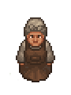

Tanner
| Tanner | |
|---|---|
 | |
Basic Information
| |
Location :
|
Refugee camp |
Trade Information
| |
Type of Goods :
|
Bags and bag techs |
Funds :
|
|
Level II Requirement :
|
|
Level III Requirement :
|
|

The Tanner is part of the Game of Crone DLC. She arrives at the Refugee camp as the 11th refugee. Her questline will be available the next day.
Quests
The Tanner had to sell her shop and her workstation at The Town to repay her son's debt. She asks for you to build a workplace for her at the refugee camp, so she can make a few revenues here as well, because her belongings at The Town did not cover the debt entirely. Finishing this quest unlocks trading tier I.
After you get the workplace ready for her, she will need a few more ingredients. She will ask you to build an animal farm for her. Fence supplies requires 24 Flitch,12 Wood Billet and 12 Refugee Happiness.Finishing this quest unlocks trading tier II.
For the animal farm to be functional, she'll ask you to settle a cow and hens. (You can get the cow from Rosa for  1 and the hens from the Fresh egg basket for
1 and the hens from the Fresh egg basket for  50 ) Finishing this quest unlocks trading tier III and she'll give you
50 ) Finishing this quest unlocks trading tier III and she'll give you
Recipe alchemists bag,
Recipe farmers bag,
Recipe fishermans bag.
Trades
|
|
| ||||||||||||||||||||||||||||||||||||||||||||||||||||||||||||
|---|---|---|---|---|---|---|---|---|---|---|---|---|---|---|---|---|---|---|---|---|---|---|---|---|---|---|---|---|---|---|---|---|---|---|---|---|---|---|---|---|---|---|---|---|---|---|---|---|---|---|---|---|---|---|---|---|---|---|---|---|---|---|
| |||||||||||||||||||||||||||||